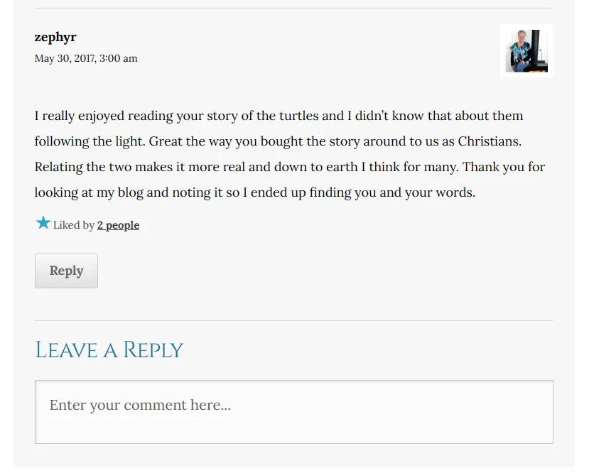

Work
Narrative
“The human brain is hard-wired to turn information into narrative: heroes, villains, victims, plots, solutions.”
—Carl Pope, executive director of Sierra Club
Every so often we read something that disrupts our perspective of the world. One such transformative paper for me was “The Narrative Construction of Reality” by psychologist Jerome Bruner.
His premise is simple: Narrative isn’t just a form of discourse; it is a pattern of thought.
Below you’ll find a selection of blog posts in which I make use of narrative to communicate ideas. As predicted, the response to using this approach was positive for the reader.


Let's work together
Need words that move people?
I'm open to copywriting, content and digital marketing roles and projects.